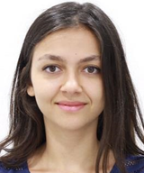
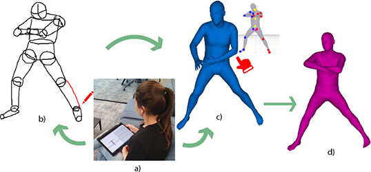
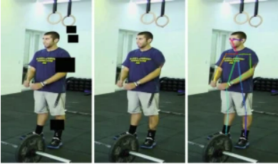

|
Gizem Esra Unlu Hi! I am Gizem Unlu, a 3rd PhD student at University College London (UCL) in the Computer Science Department. I am supervised by Prof. Gabriel Brostow. I am excited about sketch research, more specifically 3D understanding of human sketches. My focus is on deep learning for content creation; specifically image and sketch-based 3D reconstruction for creativity. |
 |
|  |
Interactive Sketching of Mannequin Poses Gizem Esra Unlu, Mohamed Sayed, Gabriel Brostow International Conference on 3D Vision (3DV) 2022 Project Page, Paper, Video, Bibtex |
|
February 2020 - |
PhD Student in Computer Vision (University College London) Supervised by Prof. Gabriel Brostow and Dr. Iasonas Kokkinos. |
|
September 2017 - January 2020 |
MSc Computer Engineering (Bogazici University) Thesis: "Image Deblurring from Sign Language Videos" Supervised by Prof. Lale Akarun. |
|
September 2012 - June 2017 |
Bachelor of Computer Engineering (Istanbul Technical University) (Double Major) Thesis: 3D Facial Reconstruction from RGB Images. Supervised by Prof. Hazim Ekenel. |
|
September 2012 - June 2017 |
Bachelor of Mathematics Engineering (Istanbul Technical University) Thesis: Filtering Techniques in Speckle Noise Reduction. Supervised by Dr. Burcu Tunga. |
|
2014-2016, |
Mercedes-Benz Istanbul, IT Intern Worked for IT SAP&Rollout Services |
|  |
ECCV 2018 Looking at People Satellite Workshop Challenge Image Completion Competition 1st place Publication: Person Inpainting with Generative Adversarial Networks . |
|
University College London |
Machine Vision TA - 2020, 2021, 2022 |
|
Bogazici University |
Computer Vision TA - 2019 |
|
Languages |
Python, C++, MATLAB, Java/Javascript |
|
Deep Learning Libraries |
Pytorch(primary), Tensorflow |
|
Useful Tools |
Blender, Adobe Illustrator, Adobe After Effects |